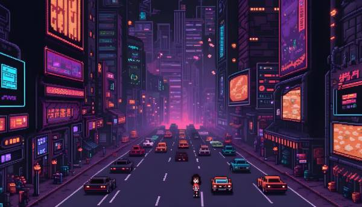
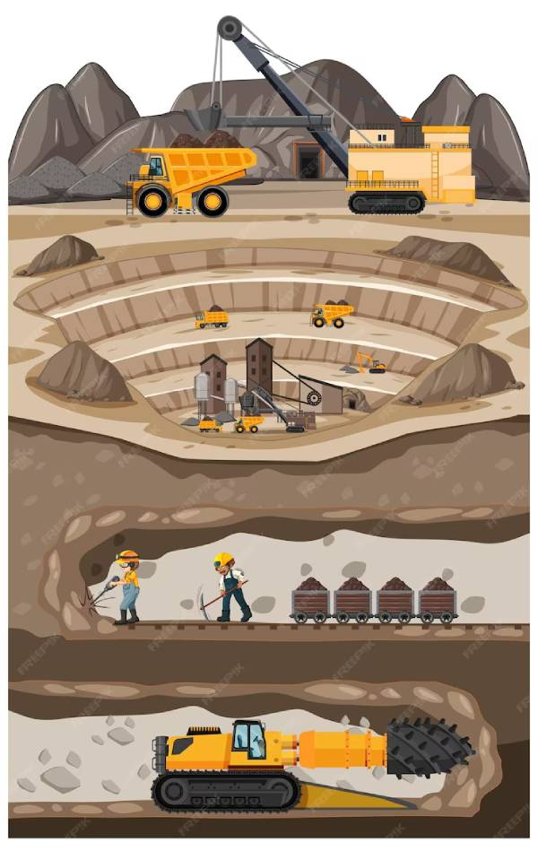
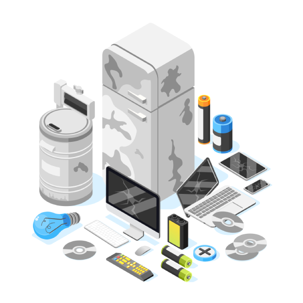

Sensibiliser aux enjeux sociaux et environnementaux de la numérisation par
le jeu vidéo
Proposition du développement d’un jeu vidéo tout public de
sensibilisation. En utilisant cet objet de pop-culture qui a lui-même
des impacts écologiques et sociaux, c'est un cheval de Troie permettant
de toucher des publics non sensibilisés aux questions écologiques.

Une jeune femme paumée dans une ville sombre où les seules lumières sont
celles des phares des voitures et des écrans publicitaires

Mini-épreuve consistant à répéter une mème séquence pour creuser et
extraire des minerais
Mini-épreuve consistant à répéter une mème séquence pour assembler des
smartphones ou des ordinateurs

Mini-jeu qui consiste à trier les déchets d'équipements électriques et
électroniques mais comme il en arrive de plus en plus, le joueur se
sentira submergé et inéluctablement, échouera à ce jeu.
Jeu
Jeu en ligne jouable dans un navigateur d’une durée de 20 à 30 minutes.
Cette durée peut être allongée avec des quêtes secondaires.
Le style du jeu pourrait être en pixel-art avec vue du dessus
(inspiration The legend of zelda – A link to the past).
Technologies utilisées : Javascript et le framework Phaser3
Publication du code et des ressources (images, sons...) sous licence
open source
Cible
Le jeu s’adresse à un public allant de 11 à 99 ans, pouvant être joué à
l'école, dans les médiathèques, dans des ateliers de sensibilisation de
professionnels (du numérique ou pas) ou pour le grand public, le jeu étant
disponible gratuitement via un site web, sur ordinateur et smartphone,
sans installation et sans prérequis technique.
Objectifs pédagogiques
Comprendre les impacts environnementaux et sociaux du numérique
Voir les externalités et les effets rebond
Avoir une vision critique face à la numérisation et à la
technologisation à outrance
Appréhender les conséquences sociales, les effets psychologiques, les
phénomènes d'addiction...
Financement du jeu
Comme il n'y a pas de modèle économique viable envisagé pour ce projet, je
cherche à financer le développement et le déploiement de ce jeu par des
financements publics (possibles multi-acteurs) sous forme de prestations
dédiées à la sensibilisation du grand public.
Autre solution complémentaire envisagée : lancer un financement
participatif en ligne.
L'équipe de conception du jeu est minimale avec un développeur (moi,
Richard) et un(e) graphiste.
Avec 5 à 10k€ : rémunérer un(e) graphiste et pouvoir lancer le
développement du jeu
Avec plus d'argent : me rémunérer (Richard), rémunérer un(e)
musicien(ne) compositeur de musique de jeu vidéo, rémunérer des
personnes contributrices au contenu du jeu, au beta-tests, etc.
Démo
Il s'agit d'un essai de mécaniques de jeu et jouable dans un navigateur
sur ordinateur ou sur smartphone, avec des graphismes en libre
d'utilisation. Cela ne présage absolument pas du contenu, du graphisme ni
du gameplay du futur jeu.
Déplacer le personnage avec les touches haut / bas / gauche / droite. Sur
mobile, avec le joystick qui s'affiche à l'écran.